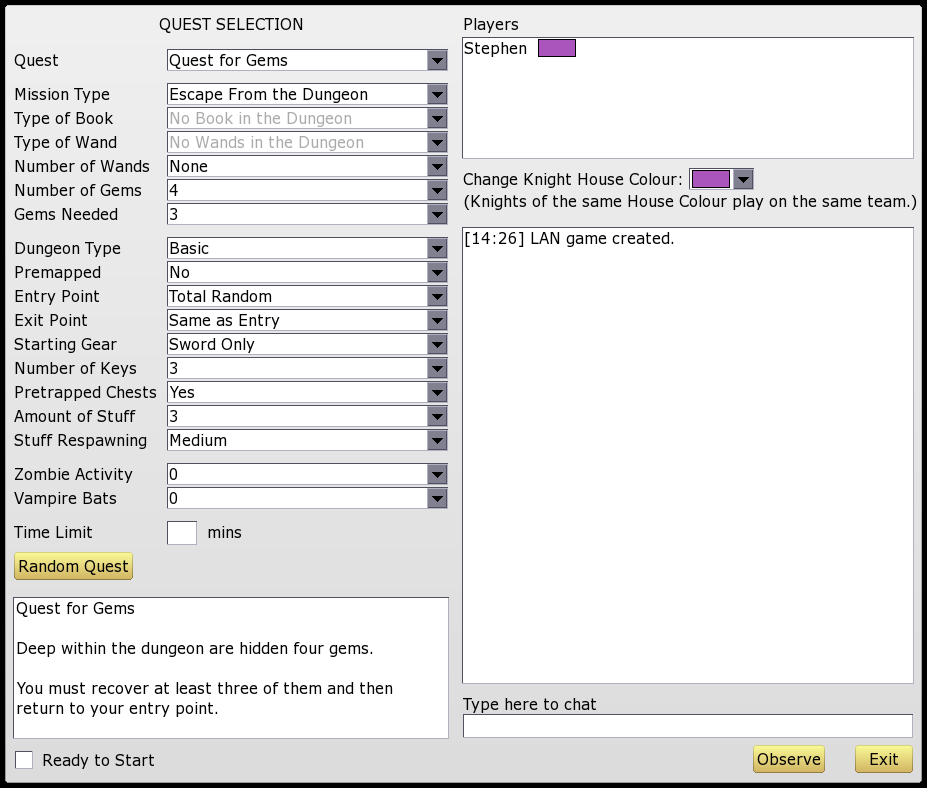

3. Quest Selection
Each game of Knights revolves around a quest – a set of
objectives that players must accomplish in order to win. Before each
game starts the players must decide which quest they wish to play.
The game comes with a number of pre-defined quests to choose from,
or you can design your own.
After joining a game the following screen will be displayed:

(Note split screen and single player games use a cut-down version
of this screen, without the chat area and player list.)
The main part of the screen, on the left, is taken up with the
quest settings, which are explained below. The right-hand area is
used for chat. At the bottom is a "Ready to Start" button; once all
players click this, the game begins.
If you click "Observe" then you will "sit out" of the next game.
You will be able to watch the game but not take part. To re-join the
game again, click "Join Game" (note this can only be done from the
quest selection screen, not during the game itself).
Quest Settings
To play one of the pre-defined quests, simply select it from the
Quest drop-down. A brief description of the mission will appear in
the small window at the bottom left.
To set up a custom quest, use the drop-down boxes to enter your
desired mission objectives and other settings. (These are
described in detail below.)
To allow the game to randomly choose a quest for you, click on
"Random Quest". You can then either accept the quest as-is, make
some tweaks of your own, or ask for another random quest.
Quest Objectives
The following options define what you have to do to win the
quest.
- Mission Type: Can be set to:
- Escape from the Dungeon: Your knight must leave the
dungeon via the exit point to win.
- Retrieve Book and Escape: Your knight must retrieve
the book and then escape via the exit point.
- Retrieve Wand and Escape: Your knight must retrieve
the wand and then escape via the exit point.
- Destroy Book with Wand: Your knight must find the
book, place it in the "special" pentagram and then destroy it
by striking it with the wand. (The special pentagram will be
surrounded by stairs or other decorations and is easily
distinguishable from a normal pentagram. See
also Pentagrams.)
- Duel to the Death: The last knight alive wins! In
order to win this quest you will first need to "secure" all
the entry points, so that your enemies cannot re-enter the
dungeon when they die.
See also Wand of
Securing.
- Deathmatch: In this game you score one point for
killing an enemy knight, and lose one point when you commit
suicide. (Being killed by a monster is "neutral" and does not
affect your score.) The winner is the player with the highest
score when the time runs out. (If no time limit is set then
the game will go on forever, or at least until the players get
bored...)
- Type of Book: If the quest involves a book then you can
choose from several types of book.
See Books for details.
- Type of Wand and Number of Wands: The Dungeon may
contain up to 8 wands. If there are multiple wands, they are
always all of the same type.
See Wands for details of each
Wand's powers.
- Number of Gems and Gems Needed: To make the
quest more interesting you can require knights to find a certain
number of gems before winning. Gems will be hidden randomly
within the dungeon, usually inside chests or on tables. Gems
have no powers or abilities, but if a knight is not carrying
enough then he will be unable to win the quest.
Dungeon Environment Settings
The following settings affect the type of dungeon generated and the
nature of the dungeon environment.
- Dungeon Type: This affects the size and layout of the
dungeon. Choose from Tiny, Small, Basic, Big, Huge, Snake, Long
Snake or Ring.
- Premapped: If set then knights will start with a complete
map of the dungeon.
- Entry Point: Controls where each knight enters the
dungeon. Choose from Total Random, Close to Other (the knights
start close together), Away from Other (the knights start far
apart from each other), or Different every Time (a different
random entry point is chosen every time you respawn).
- Exit Point: This is the place where the knight has to go
to escape from the dungeon. Choose from Same as Entry (leave via
your own entry point), Other's Entry (leave via your opponent's
entry point), Guarded (the exit point is behind locked doors and
guarded by vampire bats), or Total Random (the exit point is at an
unknown, random location). Note that Other's Entry is only
available in two-player games.
- Starting Gear: Knights may start the game with daggers,
traps, both, or just their trusty sword.
- Number of Keys: Controls the number of keys generated
(between 1 and 3). If set to 1 then few doors will be locked; if
set to 3 there will be more locked doors and all iron doors will
be locked.
- Pretrapped Chests: If this is enabled then some chests
will be trapped at the start of the game.
- Amount of Stuff: Controls the amount of equipment and
items placed randomly into the dungeon at the start of the game.
Can be between 1 and 5.
- Stuff Respawning: This controls how quickly potions and
scrolls respawn after use. Choose from Slow, Medium or Fast, or
set to None to turn off respawning. Note that this only affects
potions and scrolls; other items do not respawn.
- Zombie Activity: If this is activated, then evil magic
will cause the dead to start walking! Corpses will slowly decay
and eventually rise up as zombies. The speed at which this happens
can be set between 1 and 5, or it can be set to 0 to turn off
zombie activity.
- Vampire Bats: If this is activated then the dungeon
will be filled with bloodthirsty vampire bats. Additional bats
will also appear from pits. The number of bats can be set on a
scale from 0 to 5.
Time Limit
There is also an option to set a time limit. If the time limit runs
out, then all players lose. (The exception is deathmatch games,
where the player with the highest score will be declared the winner
when time runs out.)
House Colours and Team Games
At the right-hand side of the screen, you can set your knight's
House Colours. Knights of the same House are deemed to be allies;
therefore, depending on the colours chosen, the game will either be
"all against all" (if every knight has their own colour) or a "team"
game (if some knights share the same colour).
In team games, there are some changes to the normal rules:
- Friendly fire is disabled; your weapon blows will not harm other
knights on your own team.
- Only one team member can complete the quest. For example, if the
quest is to retrieve 3 gems and the book, then it is not allowed for
one knight to take the gems, and another to take the book; there
must be one knight who has both the gems and the book. However, as
soon as one knight finishes the quest, all knights on that team will
be declared "winners".